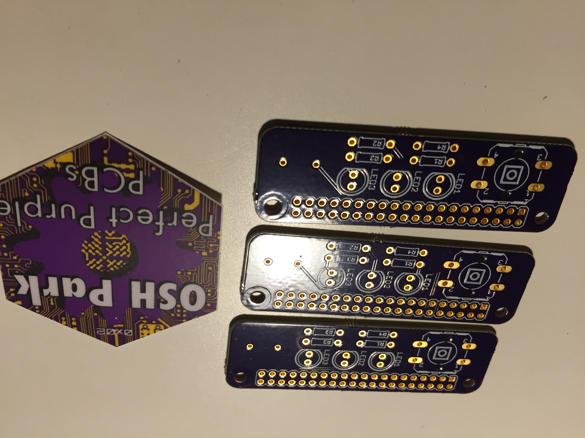
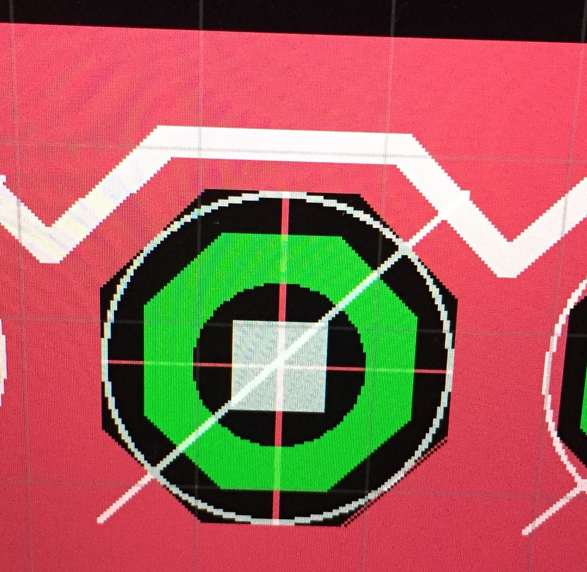
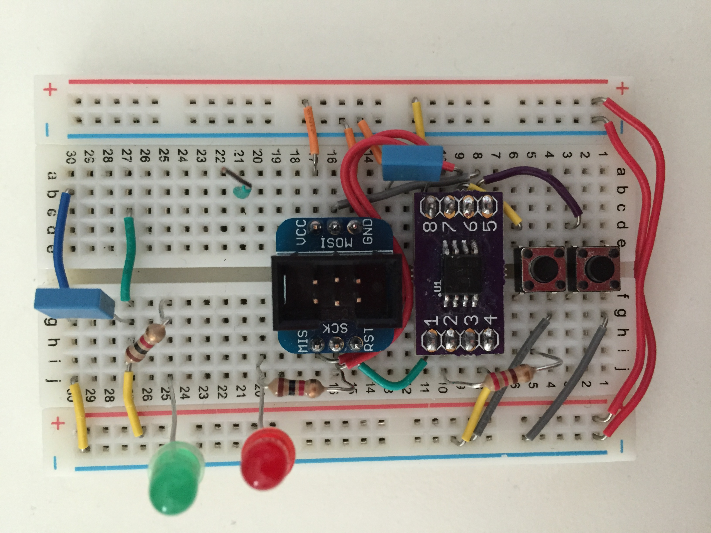
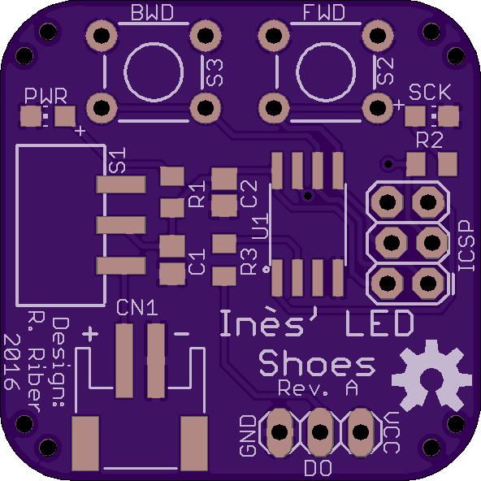

Intro
The goal for this project was to customize my siser’s shoes with LED strips. Although they were eventually never really used, this mostly gave me an excuse to design my first (actually working) PCB.
Sidenote
Here is a picture of my first actual PCB design. Clearly defining the ground pours with a width of zero thinking it would not matter was a mistake.


Design
The design idea was quite simple : essentially make my own tiny Arduino board. Since only minimal IO was needed, I decided to use the ATTiny85. With some breakout boards for the SOIC package of the ATTiny designed and ordered, prototyping was done on an Arduino Uno, then replacing it with a DIP package of the ATTiny directly on the breadboard


PCB
The PCB was designed in EAGLE, and ordered from OSH Park. The design was exceedingly simple:
- Two buttons (forward and backwards in the animations)
- A switch to turn the system on and off
- A JST connector for the battery
- A header for ICSP programming
- Solder points for the three wires of the LED strip
